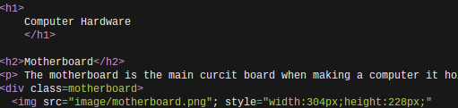

When first starting this website, I learned how to put together the navbar that is at the top of each page. First I needed to enter the tag ul to make an unordered list. After, I needed to add in the links under the ul tag to redirect the user to different parts of my page. Using the link tag and the href, I entered the links to redirect the users to the other pages on my site, after the ending carrot for the href tag I added the word that will display to the user for them to interact with. This can be seen in my code below. When mousing over the code below, will show the navbar as the code is telling it to,without css.
How its made: Hardware Page
From my hardware page I need to desrcibe all the components needed to make computer. Which is the motherboard, CPU, RAM, PSU, HDD, the BUS system and whatever Peripherals you need. The same process is used to make every section of the hardware page, changing the picture and the desrciption. To make the title of the hardware page I used the tag <h1></h1> and between the opening and closing tags, I wrote Computer Hardware to create the first header or title. Then I used the tag <h2></h2>to create my subheader of "Motherboard" to make a smaller title. Under the <h2></h2> you can start typing for the description of, in this case, the Motherboard. Then to add the picture I found the picture I want and saved it on my computer and the inserted it to my images file then used <img src="image/motherboard.png" img tag is use to tell the file is a picture and src=image/ is tell the computer the picture is in the image file the then insert the name of the picture file. Then to resize the picture I used the style tag to set the width and the height of the picture; style="width:304px;height:228px;". Finally, to section off the part I wrote, I used the <hr> tag to make a line under everthing above the tag.
